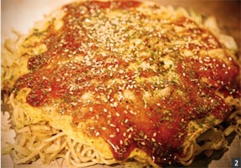

오코노미야키의 종류
히로시마풍 오코노미야키는 반죽을 넓게 핀 다음 많은 양의 양배추와 숙주, 그리고 여러 가지 재료(돼지고기, 오징어, 조갯살, 새우 등)에 소바면을 올려놓고 철판위에서 구워서 만든다.
오사카풍 오코노미야끼는 오사카지역의 신선한 해산물을 바탕으로 만들어내기 때문에 밀가루 반죽과 해산물이 조화로운 맛을 낸다.
히로시마풍 오코노미야키는 반죽을 넓게 핀 다음 많은 양의 양배추와 숙주, 그리고 여러 가지 재료(돼지고기, 오징어, 조갯살, 새우 등)에 소바면을 올려놓고 철판위에서 구워서 만든다.
오사카풍 오코노미야끼는 오사카지역의 신선한 해산물을 바탕으로 만들어내기 때문에 밀가루 반죽과 해산물이 조화로운 맛을 낸다.
① 프라이팬에 식용유를 두른 뒤 잘게 썬 베이컨, 다진 마늘을 먼저 넣고 볶는다.
② 곱게 다진 양파와 셀러리 그리고 당근도 함께 넣고 볶는다.
③ 재료가 적당히 볶아지면 케첩, 칠리소스, 우스터 소스, 데미글라스 소스, 핫소스, 닭육수를 넣고 20분 정도 끓인 뒤 믹서에 넣고 갈아준다.